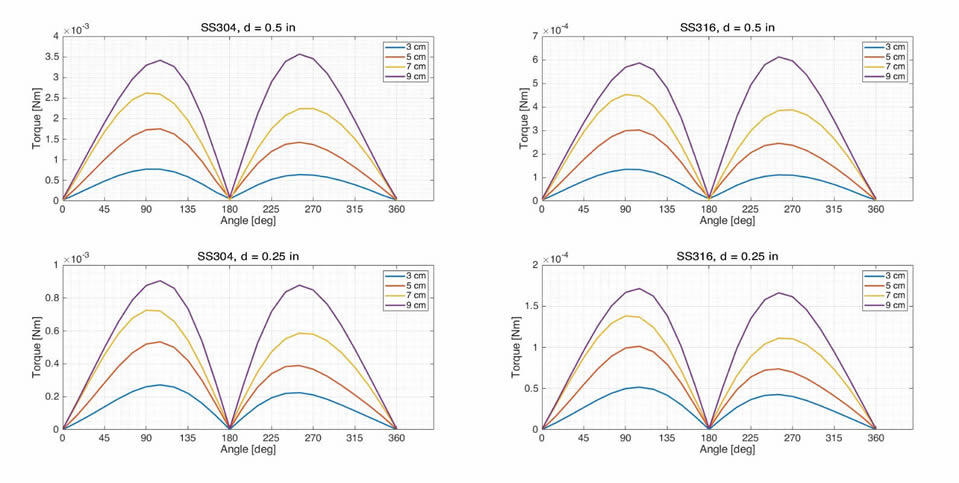

Research
University of Saskatchewan
Some of my current work at the University of Saskatchewan, includes computed tomography at the Canadian Light Source. The Light Source has dedicated beamlines for photons from mid infrared to hard x-rays. At the facility I work at, BMIT (Biomedical Imaging and Therapy), we refine hard x-rays from the synchrotron for imaging.
The Canadian Light Source is a third generation synchrotron. One of the advantages of such a facitlity is that CT scans can be performed remarkably faster than a laboratory scanner. One technqiue that takes advantage of this speed is dynamic CT, scanning samples while undergoing some change.
University of Western Ontario
When I was part of the xMR Labs at The University of Western Ontario, I worked on medical implant safety during Magnetic Resonance Imaging. At the time, implant safety was only assessed through experimental means standardized by various organizations (ASTM, ISO, IEC, NEMA, etc.). I was working on testing implant safety via a reliable computer simulation and verification through standard experiments.
I mainly did simulations in COMSOL Multiphysics (COMSOL Inc., Sweden), a finite element method solver. I used it to calculate the magnetostatics of geometrically simple objects rotating in a uniform static magnetic field. I started off with a sphere and infinitely long cylinder. The solutions to both cases are known so the simulated results can be verified with known analytic solutions.


On to even more cylinders. These will be machined out of stainless-steel grades 304 and 316 later for experimental verification. The two diameters used were 0.5 and 0.25 inches with lengths of 3, 5, 7, and 9 cm. The supplier of the raw material is an American company, so the rods were sold in inches but being a Canadian institution, the lengths were machined to specifications in metric.

I should mention that the whole point is to computationally find the torque induced on metal rods due to exposure to a static magnetic field. The simulated results from COMSOL are compared with experimental measurements.
Something unexpected that came up was finding the magnetic susceptibility of stainless steel.

Stainless steel rods were machined for two kinds of tests, magnetically induced deflection and rotation. I only worked on the rotation tests.

The apparatus used was designed from the ground up but followed the specifications from the ASTM International. Specifically, it was designed according to ASTM F2213-17. The experimental measurements were taken on a 3 T GE scanner.


ASTM International is the governing agency for producing standard tests. There are two main methods for measuring magnetically induced torque on medical implants. Shown below are the apparatuses for said methods, one using a low-friction spindle and another using a torsional spring. A brief study I did involved comparing the instrumental uncertainties between methods.

One may outperform the other.